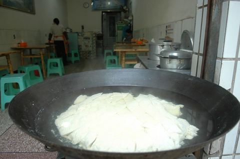

种子愛旅行
按地区
精选
沉浸式
关于
TRAVEL JOURNAL · 2004–2019
按地区浏览
走过的地方，点进去看看
韩国
12 段旅程 · 742 张照片
邮轮之旅
9 段旅程 · 1080 张照片
其他
7 段旅程 · 1472 张照片
日本
6 段旅程 · 211 张照片
塞班岛
4 段旅程 · 246 张照片
美国
3 段旅程 · 203 张照片
广西
2 段旅程 · 45 张照片
台湾
2 段旅程 · 132 张照片
内蒙古
2 段旅程 · 43 张照片
中亚
1 段旅程 · 72 张照片
文莱
1 段旅程 · 45 张照片
福建
1 段旅程 · 17 张照片
关岛
1 段旅程 · 31 张照片
埃及
1 段旅程 · 139 张照片
澳门
1 段旅程 · 32 张照片
斯里兰卡
1 段旅程 · 98 张照片
辽宁
1 段旅程 · 29 张照片
新加坡
1 段旅程 · 109 张照片
尼泊尔
1 段旅程 · 127 张照片

重庆
1 段旅程 · 14 张照片
西藏
1 段旅程 · 14 张照片
俄罗斯
1 段旅程 · 31 张照片
四川
1 段旅程 · 19 张照片
河南
1 段旅程 · 11 张照片
比利时
1 段旅程 · 149 张照片
菲律宾
1 段旅程 · 11 张照片
帕劳
1 段旅程 · 40 张照片
朝鲜
1 段旅程 · 19 张照片
泰国
1 段旅程 · 16 张照片